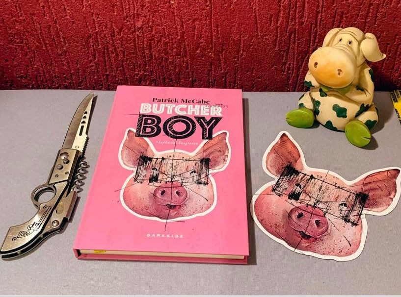

Butcher Boy: Infância Sangrenta
A infância é um período de descobertas, em que a imaginação corre solta. Em suas mentes, as crianças dão contornos de fantasia até mesmo aos aspectos mais monótonos e indigestos de sua realidade e, assim, transformam sua vida em aventura. Francis “Francie” Brady, o protagonista de Butcher Boy: Infância Sangrenta, tem essa imaginação poderosa que pode temperar a vida de uma criança, mas também algo a mais. Por trás de uma presumida fachada de inocência, se esconde um coração que pulsa com violência, revolta e indignação.
Este livro tinha tudo para ser aquele típico filme da sessão da tarde onde: “uma turminha do barulho se me mete em altas confusões” exceto pelo fato que tudo aqui é mais perturbador. O nosso protagonista se mete em confusões um pouco mais pesadas e vai mostrar como a nossa infância, nossos traumas, nossas escolhas e nossa vivência vai refletir em quem nos tornamos. O livros traz uma perturbação e aflição do começo ao fim e a palavra “PORCO” vai ecoar em você do começo ao fim assim como ecoou em Francis… por toda vida.
A narrativa aqui é um pouco diferente, e as vezes você pode ter dificuldade para se acostumar ao estilo de início mas, depois você entende porque o autor escolheu esse estilo informal e percebe que faz parte da história. Narrado em primeira pessoa pelo próprio Francie, o romance é um retrato panorâmico da vida, dos pensamentos e dos atos desse menino. Desprovido de empatia, mas não de humor, o fluxo de pensamentos de Francie guia o leitor pela Irlanda dos anos 1960, costurando passado e presente.
Toda essa agonia e angústia passada para nós de forma eficaz fica por conta do escritor Irlandês Patrick McCabe entende a importância de dar voz aos excluídos, como o seu protagonista.
O livro foi adaptado para o cinema pelo cineasta Neil Jordan em 1998 e recebeu no Brasil o título de Nó na Garganta.